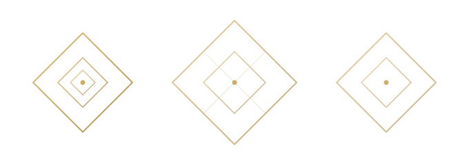
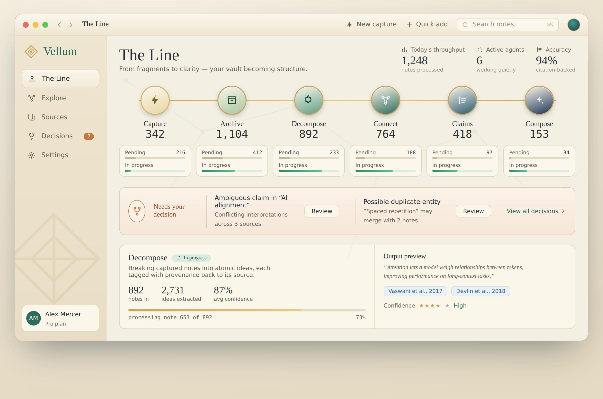
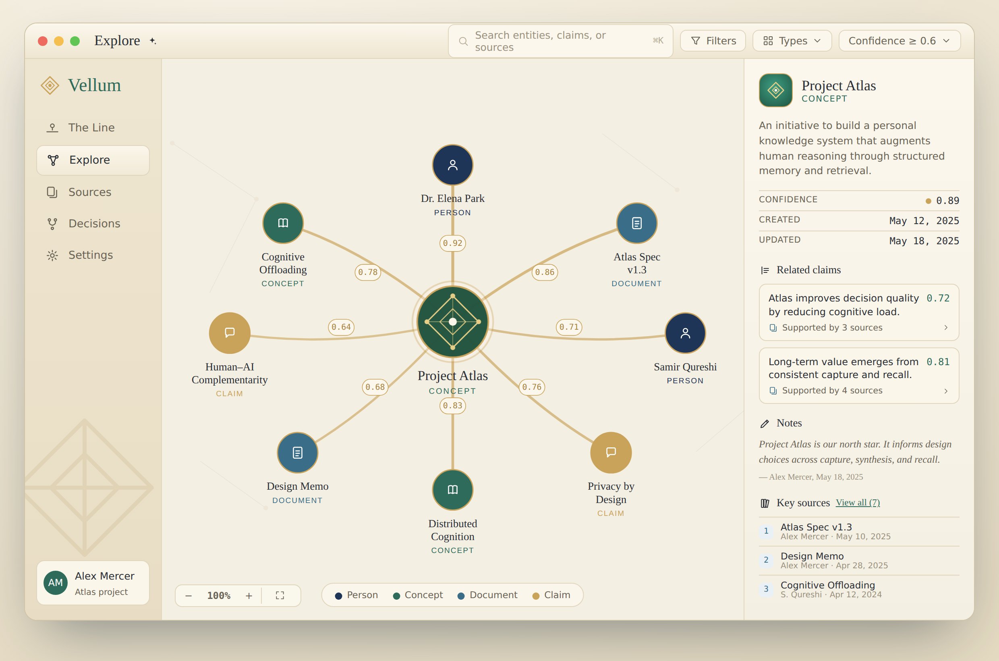

A calm second brain for your markdown notes — it turns scattered fragments into grounded, connected, citation-backed recall.
Vellum sits quietly above your Obsidian or markdown vault — a calm intelligence layer that works so you can think.
You capture anything, loosely. Behind the scenes, autonomous agents archive what matters, decompose complex ideas into atomic claims, surface latent connections, and compose synthesis into citation-backed recall. It is minimal and mostly headless — it does a librarian's work so you don't have to. Your notes remain yours; Vellum helps them grow into lasting, trustworthy knowledge.
The brand voice is a quiet, gilded study: scholarly and warm, never clinical. The reference point is crystalline, not botanical — knowledge as pattern, fractal, and symmetry, not as foliage. Alive and generative, but rendered as math.
A self-similar fractal lattice — nested diamonds climbing toward one luminous center node: the fragment that has linked itself into structure.
The lush render is the dock / Finder / About expression — high-DPI detail is a feature here. At 32px and below, switch to the monochrome glyph (a template image — single color, no gradient). They are the same identity at two zoom levels, sharing the same DNA: diamond lattice, one center node. Because the mark is a fractal, the same shape works at 16px, inside a graph node, and as the whole knowledge graph.
Keep the lattice symmetric and the center node the brightest point. Let the background fractal field carry hero detail and drop away as it scales.
Add orbital/mandala rings, recolor the gold, or stretch the squircle. Don't ship the detailed render below 32px — use the glyph.
Warm cream as the ground, viridian and deep blue for structure, gold rationed as the gilded accent, and one ember tone held back for a single job.
A warm old-style serif for the voice, a clean grotesque for the interface, a measured mono for data. Numbers should always feel weighed and trustworthy.
Knowledge that grows and connects — rendered as a living lattice. Crystalline, not botanical.

Fractal lattices, nested self-similar diamonds, tessellation, mirror shards, soft blue-to-green gradients, faint drifting node fields. Geometry that reads as pattern and symmetry.
Gold leaves, vines, foliage, sprouting branches, mandala/orbital rings. These read garden / wellness / mystic and pull away from the scholarly center.
The mark is the same at every scale. Use that: the icon, the node at the center of Explore, and the overall shape of a knowledge graph are all the same lattice motif, zoomed. Where you need texture — section dividers, empty states, watermarks — use a faint fractal field, never a decorative illustration.
Calm and ambient. Motion shows the system is alive and working, never demands attention.
Intelligent, warm, unvarnished. Plain verbs, sentence case, no filler. The interface speaks as the product, not as a person.
Name things by what the user controls and recognizes. Describe what something does in plain terms rather than selling it. An empty screen is an invitation to capture; an error says what happened and how to fix it, in Vellum's own calm register.
Two signature surfaces show the system the way the brand intends — restrained layout, lavish detail.

A horizontal assembly line — Capture → Archive → Decompose → Connect → Claims → Compose — strung on a gold thread. Station color matures along one ramp (raw cream to composed deep blue). Pending vs in-progress shown as soft bars; the ember cue is the only thing that asks for you.

One entity at center, typed neighbors with confidence on every edge, never a hairball. The center node is a fractal version of the mark — the “this contains a sub-graph” idea made visible. The rail delivers grounded, citation-backed recall.